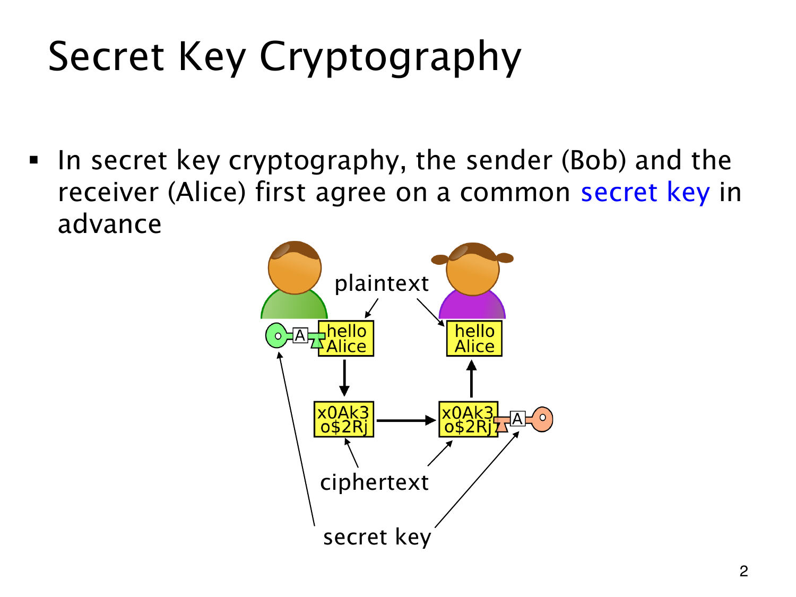

L1.14 · 第 2 页讲解原文
查看这一页课件

密文传过去，共享密钥留在两端
Bob 与 Alice 先约定同一个 secret key（秘密密钥）。图中两把都标为 A 的钥匙，表示双方掌握同一个秘密。
“hello Alice” 是 plaintext（明文）。Bob 用密钥加密，得到 ciphertext（密文），经中间横向箭头发送给 Alice；Alice 再用共享密钥解密，恢复原来的明文。图中的上下箭头则表示两端本地进行的加密与解密。
解密能撤销加密，是正确性的要求；不知道密钥的人难以由密文恢复消息，才是保密性的要求。这两件事需要分开判断。
整个流程仍以事先安全共享密钥为前提。攻击者若也得到密钥，即使加解密算法完全正确，通常仍能解密。双方无法预先安全见面时，怎样建立这个共同秘密，还需要后面解决。